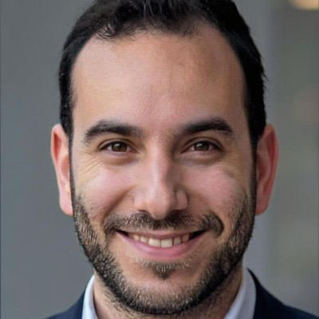

ייעוץ ארגוני למוסדות
מיפוי מבני, הגדרת תפקידים, נהלי עבודה, מערכות בקרה והקמת תשתיות ניהול שרודות גם אחרי שאנחנו יוצאים מהשטח.
- אבחון ארגוני מקיף
- בניית מבנה ארגוני ונהלים
- עבודה מול הוועד והרבנים
עמותה לייעוץ וליווי לציבור החרדי
בינה היא עמותה מקצועית המלווה מנהלי מוסדות חינוך במגזר החרדי, בייעוץ ארגוני, חיבור למקורות מימון ובניית מתודה ניהולית סדורה לטווח הארוך. מטרתנו היא לקדם את איכות החינוך, להעצים את השדרה הניהולית והפדגוגית, ולאפשר למנהלים להוביל מערכות יציבות ומיטיבות יותר.
החזון
החינוך החרדי, ובפרט עולם תלמודי התורה ובתי הספר, צמא לליווי ארגוני אמיתי. גופים ממשלתיים מציעים סיוע, אך לרוב הם רחוקים מהבנת המאפיינים הייחודיים של מנהלי המוסדות ואינם זוכים לאמונם המלא. מנגד, תקציבים נכבדים, ובראשם תוכנית גפן, הולכים לאיבוד רק משום שאין מי שיתרגם בירוקרטיה מורכבת לעשייה בשטח.
בינה נוסדה כדי לסגור בדיוק את הפער הזה: גוף עצמאי, חוץ-ממסדי, שמדבר את שפת המגזר באופן טבעי, ובו-זמנית מביא איתו מתודה מקצועית, סטנדרט עבודה גבוה ויכולת מוכחת למיצוי משאבים.
כעמותה, השליחות שלנו היא לקדם ולשפר את פני השטח החינוכיים: לחזק את מוסדות החינוך מבפנים, לסייע למנהלים לפעול מתוך בהירות, יציבות ואחריות, וליצור תשתיות ניהול חזקות שיעניקו לתלמידים את המעטפת הטובה ביותר לאורך זמן.
השאיפה היא לבנות מנגנון שמאפשר למנהל הטוב להתפנות לליבת התפקיד שלו, החינוך, בידיעה שמישהו אחראי מלווה אותו בכל מה שמסביב.
שירותים
העמותה פועלת במודל מקצועי ושקוף: מסלולי ליווי ברורים, מתודה אחידה והתאמה לצרכי המוסד.
מיפוי מבני, הגדרת תפקידים, נהלי עבודה, מערכות בקרה והקמת תשתיות ניהול שרודות גם אחרי שאנחנו יוצאים מהשטח.
תוכנית ליווי שנתית צמודה למנהל המוסד: פגישות סדורות, פתרון מצבי משבר, פיתוח חשיבה אסטרטגית וגיבוי בקבלת החלטות.
חיבור המוסד לתקציבי תוכנית גפן, רשויות מקומיות, קרנות ועמותות. תרגום הבירוקרטיה לכסף שבאמת מגיע למוסד.
השיטה
לא תוכנית במגירה ולא הרצאת השראה. תהליך מובנה, נמדד, עם נקודות החלטה ברורות לאורך הדרך.
שיחות עומק עם ההנהלה, הצוות והרבנים. מיפוי מצב קיים: ארגוני, תקציבי וחינוכי.
גיבוש מסמך יעדים, סדרי עדיפויות, לוחות זמנים ותקציב, בהתאמה למציאות של המוסד.
פגישות קבועות, פתרון אתגרים תוך כדי תנועה, חיבור לגורמי מימון וטיפול בנקודות התורפה.
העברת ידע וכלים לצוות הניהולי, כך שהמוסד יוכל להמשיך לפעול חזק גם בסיום הליווי.
המודלים שלנו
אנחנו עובדים עם מודלים פשוטים להסבר ועמוקים ליישום: מיפוי מצב המוסד, הבנת תפקיד המנהל, והובלת שינוי שמחזיק לאורך זמן.
מסגרת לאבחון מלא של מוסד חינוכי: הנהגה, צוות, למידה, אקלים, קהילה ותשתיות - בהתאמה לשפת המגזר.
המודל של מינצברג עוזר להבין את עבודת המנהל דרך תפקידי הנהגה, מידע וקבלת החלטות.
דרך מובנית להפוך שינוי מרעיון טוב לתהליך: דחיפות, שותפים, חזון, הצלחות קצרות ועיגון בתרבות.
הסבר מרוכז על שלושת המודלים, עם קישורים למאמרים המלאים וליישום בתהליך הליווי.
מי אנחנו
צוות מוביל, כל אחד עם נסיון וזווית מקצועית משלימה. יחד אנחנו מביאים שילוב של עומק תורני, שפה ארגונית ומקצועיות תפעולית.
מומחה לחינוך ומנהיגות
ממונה על החינוך החברתי-ערכי במחוז החרדי במשרד החינוך, בוגר מכון מנדל למנהיגות, מנהל תנועת הנוער "אחווה" ומרצה לתואר שני באוניברסיטת חיפה. מומחה בהנעת צוותים ובחינוך ערכי.

מוביל תהליכים וחדשנות
משלב רקע בפסיכולוגיה ובעולם הפיננסי עם תשוקה להובלת תהליכים ולשילוב טכנולוגיה ככלי לקידום. מסייע למוסדות להפוך חזון לתהליכים מעשיים, נמדדים, ולייצר שינוי שמורגש בשטח.
מוביל תהליכים מורכבים
בעל ניסיון בהובלת תהליכים מורכבים, חיבור בין גורמים שונים ובניית מהלכים ישימים בתוך מציאות ארגונית רגישה. מסייע למנהלים לפרק אתגר גדול לשלבים ברורים, לרתום שותפים, ולהתקדם באופן מדוד עד לתוצאה בשטח.
יועץ ארגוני למערכות חינוך
בעל M.Ed, עם מעל 15 שנות ניסיון בהוראה, ניהול תיכון וליווי מוסדות מטעם הפיקוח. מסייע למנהלים להפוך מורכבות לתהליך ברור, ולחבר בין חזון, יעדים ומשאבים לעשייה חיה.
למה אנחנו
אין לנו אג'נדה זרה. אנחנו עובדים עבור המוסד, מתוך הבנה של רוחו ושל הרבנים העומדים בראשו.
אנחנו עמותה שהוקמה כדי לקדם את איכות החינוך במגזר החרדי, ולחזק מוסדות שמבקשים להתנהל במקצועיות ובאחריות.
מודל של ליווי שנתי, ולא הדרכה חד-פעמית, שמייצר שינוי שנשאר גם שנה אחרי שיצאנו מהשטח.
צוות מוביל, כל אחד עם תחום חוזק שונה, שעובד יחד על כל מוסד. כך מקבלים את הטוב מכולם.
מסלולי ליווי ברורים, תיאום ציפיות מסודר וללא הפתעות. העלות מסובסדת כחלק ממטרת העמותה להנגיש ליווי מקצועי למוסדות החינוך.
אתיקה וסודיות
תהליך ייעוץ ארגוני נוגע לעיתים בנושאים רגישים: צוות, הנהלה, תקציבים, הורים, תלמידים ותהליכים פנימיים. לכן אנחנו עובדים מתוך מחויבות מלאה לדיסקרטיות, אחריות ושמירה על כבוד המוסד והאנשים שבתוכו.
מידע שנמסר לנו במסגרת הליווי נשאר בתוך התהליך, ואינו מועבר לגורמים חיצוניים ללא הסכמה מפורשת של הנהלת המוסד.
מסמכים, נתונים ותובנות מקצועיות נשמרים בזהירות, משותפים רק עם מי שנדרש לתהליך, ומטופלים מתוך אחריות למידע רגיש.
האבחון והליווי נעשים בלי שיפוטיות ובלי חשיפה מיותרת. המטרה היא לחזק את המוסד, לא לסמן אשמים או להוציא חולשות החוצה.
כבר בתחילת הדרך מגדירים מי שותף לתהליך, איזה מידע נאסף, כיצד משתמשים בו, ומהם גבולות הדיווח והעדכון מול ההנהלה.
דברו איתנו
פגישת היכרות ראשונית ללא עלות וללא התחייבות. נכיר את האתגר, נשמע מה ניסיתם עד כה ונציע כיוון פעולה אם נראה שיש התאמה. במידת הצורך נציג גם מסלול ליווי מסובסד ומותאם ליכולת ולצרכי המוסד.